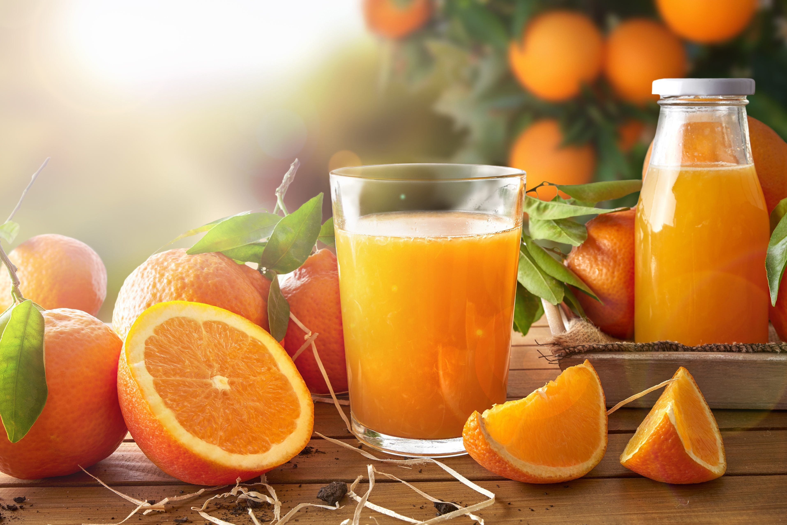
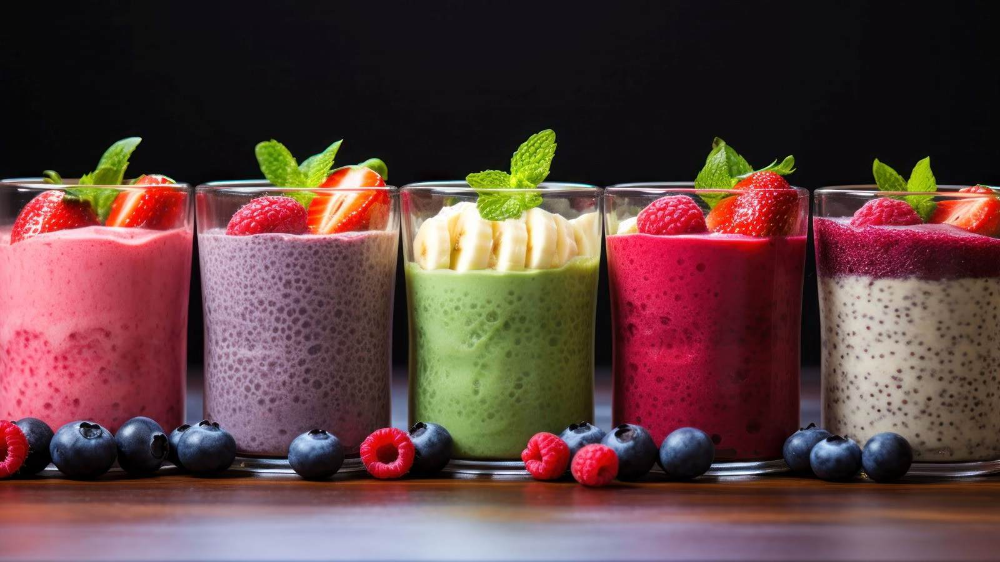
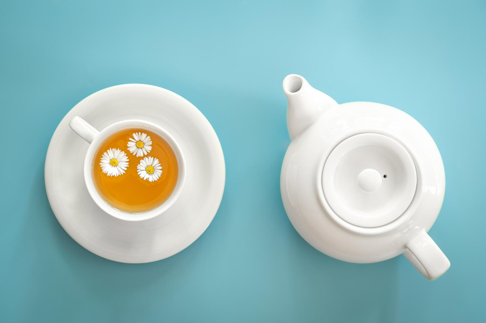
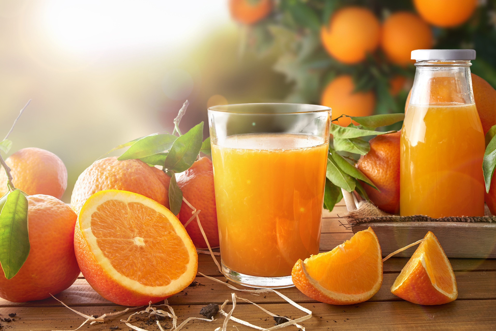
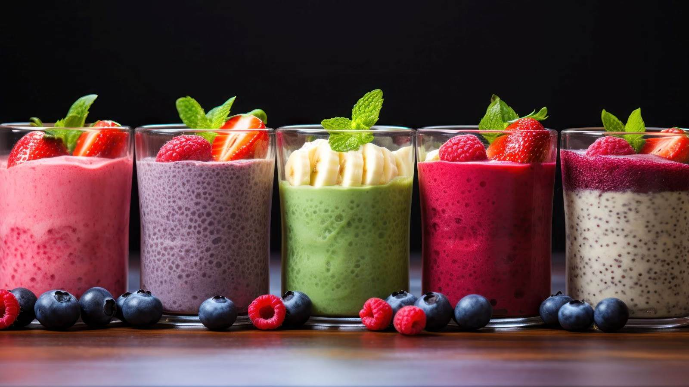
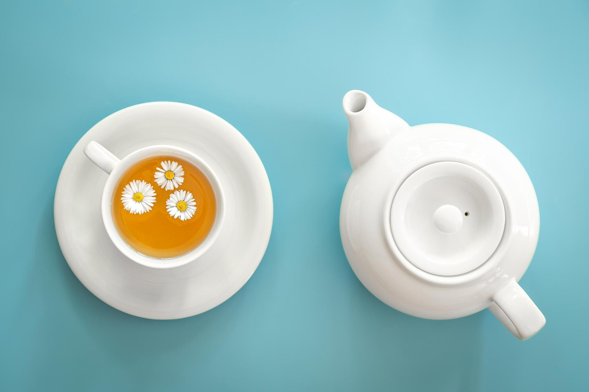

Breakfast Beverages
 





Breakfast beverages are the perfect complement to your morning meal, whether you're in the mood for something energizing or refreshing.
- Coffee: A steaming cup of coffee provides the perfect jolt of caffeine to kickstart your day and pairs wonderfully with both sweet and savory breakfast foods.
- Juice: Freshly squeezed or store-bought, a glass of juice, whether it is orange, apple, or a blend, brings a burst of fruity freshness to your morning routine.
- Smoothies: Blended with fruits, vegetables, and sometimes yogurt, smoothies are a nutritious and refreshing way to fuel up while on the go.
- Tea: A calming and caffeine-free option, herbal teas like chamomile or mint offer a soothing start to the day with light, refreshing flavors.
Whether it's a rich cup of coffee, a refreshing smoothie, or a calming herbal tea, breakfast beverages are an essential part of the morning ritual. They complement your meal while providing the perfect balance of refreshment and energy.